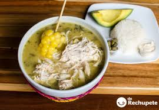

Ajiaco Recipe

Ingredients
- 2 large chicken breasts (bone-in for max flavor)
- 12 cups chicken stock or water
- 3 corn cobs, cut into 2 pieces each
- 1 large white onion, halved
- 3 garlic cloves, smashed
- Papa criolla (yellow baby potatoes)
- Sabanera (waxy potato; Yukon Gold works)
- Pastusa (starchy potato; Russet works)
- 3 fresh guascas leaves (or 2 tsp dried)
- Salt and pepper
- Garnishes & sides
- 1 cup heavy cream
- 1 cup capers
- 1-2 ripe avocados, sliced
- White rice (cooked)
- Fresh cilantro (optional)
- Lime wedges
Steps
- Build the broth
Big pot, medium-high heat. Add chicken, corn, onion, garlic, and stock. Salt lightly. Bring to a boil, then drop to a gentle simmer for ~40 min.
- Shred chickenPull out the chicken. Let it cool a bit and shred it. Toss the onion and garlic
- Chop the potatoesAdd the sabanera/Yukon and pastusa/Russet potatoes first. Simmer ~15 min.
- let it thickenAdd the papa criolla (yellow baby potatoes). These little guys break down and give that creamy body. Simmer another 15-20 min, mashing a few with a spoon if you want extra thickness.
- Season and finishReturn shredded chicken to the pot. Drop in guascas. Taste and adjust salt and pepper. Simmer 5 more minutes.
- ServeLadle soup into deep bowls with corn pieces and chicken. Serve with sides: a scoop of white rice, slices of avocado, a drizzle of heavy cream, a spoonful of capers, fresh cilantro, and a squeeze of lime.